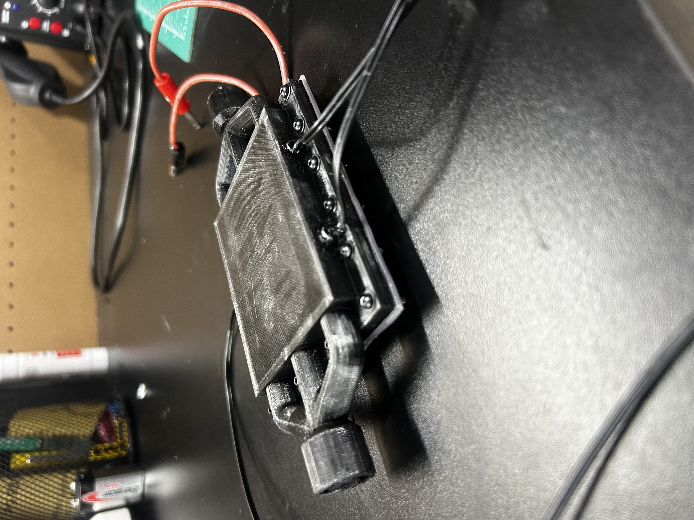
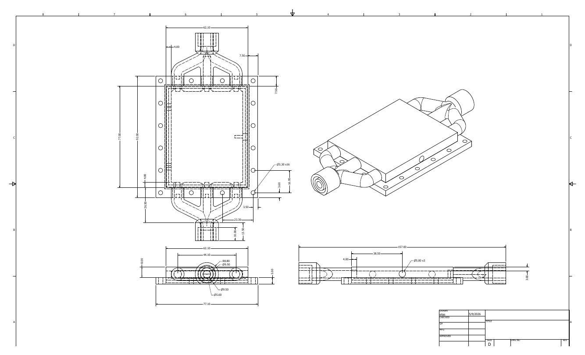
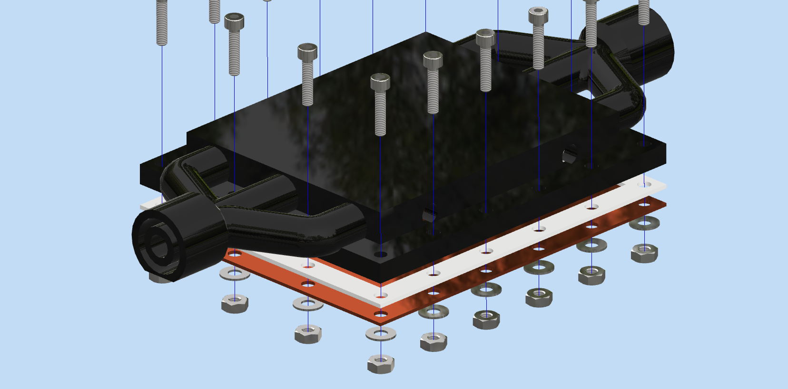
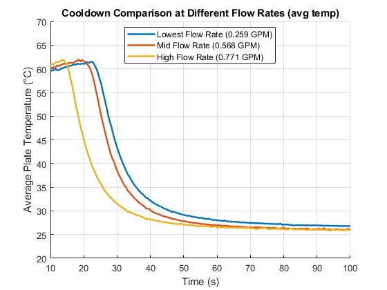
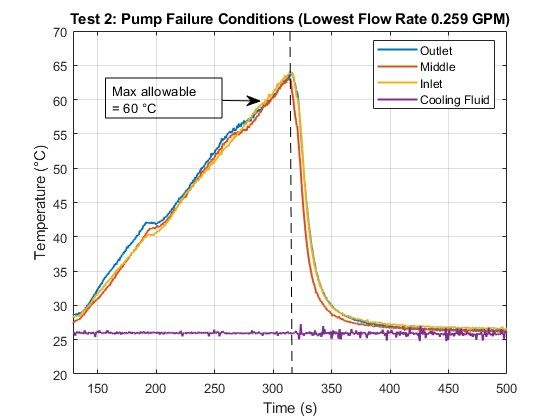
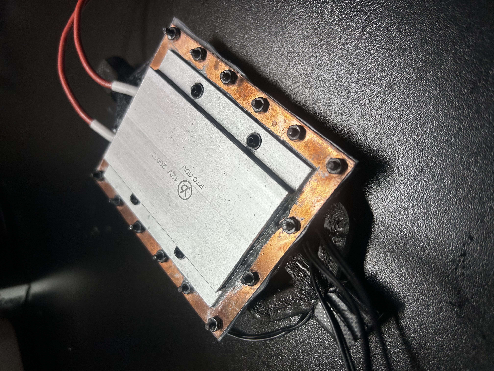

I designed and tested a compact liquid-cooling plate for a 22 W heat source. The engineering objective was to validate conduction and convection concepts learned in a heat transfer class by experimentally evaluating temperature distribution and cooling performance.

The assembly consist of a 3D-printed outer body shell that directs waterflow over a thin copper diaphragm. This design also includes a silicone gasket around the shell perimeter, which acts as an insulator and sealer.

Testing showed that increasing coolant flow from 0.259 to 0.771 GPM substantially reduced cooldown time. Although the higher flow rate cooled the plate more quickly, all three tests approached a similar steady-state temperature of approximately 26–27 °C.

A simulated pump-failure test was also performed to evaluate the system under an abnormal operating condition. After the plate exceeded the 60 °C safety limit, restoring coolant circulation rapidly reduced its temperature to below 30 °C. The completed prototype demonstrated effective thermal management, repeatable performance, and reliable recovery from coolant-flow interruption.

The experimental results successfully verified the conduction and convection equations studied in the heat transfer class. The measured temperature responses followed the behavior predicted by the theoretical heat-transfer relationships. The water-column thickness inside the shell could have been reduced to create a more compact design and decrease the required coolant volume. However, the limiting factor in this project was the accuracy and resolution of the temperature sensors, which made smaller temperature differences difficult to measure reliably.